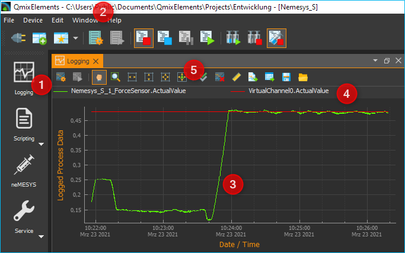
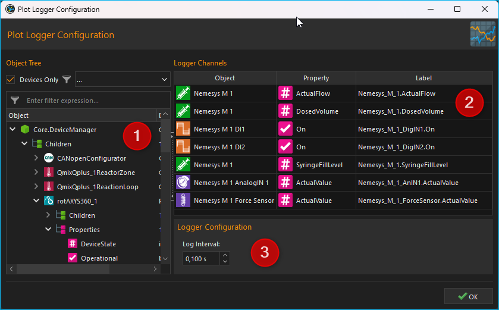
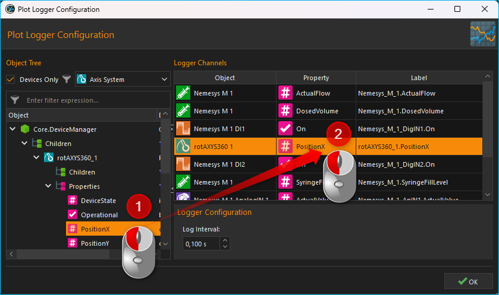

9. Grafischer Datenlogger
9.1. Einführung
Neben der Datenaufzeichnung in CSV-Dateien können Sie mit dem Datalogger-Plugin Prozessdaten in Diagrammen aufzeichnen und damit in Echtzeit die zeitliche Veränderung dieser Prozessdaten grafisch visualisieren. Zur Anzeige der Prozessdaten-Diagramme klicken Sie in der Seitenleiste auf die Schaltfläche Logging ❶ (siehe Abbildung unten) oder blenden den Logging View über das Hauptmenü ein (:) ❷.
In der Abbildung oben sehen Sie die wichtigsten Bedienelemente:
Logging-Schaltfläche - Hiermit blenden Sie das Prozessdaten-Diagramm ein.
View Menü - damit kann das Prozessdaten Diagramm ebenfalls ein- und ausgeblendet werden
Zeichenfläche - Hier sehen Sie die Kurven aller Prozessdaten die von dem Diagramm aufgezeichnet werden.
Legende - Die Legende enthält die Bezeichnung aller Kurven die im Diagramm aufgezeichnet werden mit der entsprechenden Farbe. Über die Legende können Kurven selektiv ein- / und ausgeblendet werden.
Werkzeugleiste - Hier finden Sie Schaltflächen zur Konfiguration der Datenaufzeichnung, zum Starten und Stoppen der Aufzeichnung und zur Navigation innerhalb der Darstellung.
9.2. Werkzeugleiste
|
Öffnet den Konfigurationsdialog zur Konfiguration des grafischen Prozessdatenloggers |
|
Startet / stoppt die Aufzeichnung von Prozessdaten |
|
Handwerkzeug zum Verschieben des aktuellen Ausschnitts der im Diagramm angezeigt wird |
|
Vergrößerungsrahmen aufziehen zum gezielten Vergrößern bestimmter Bereiche |
|
Passt die Skalierung der X-Achse so an, dass alle Messwerte auf den Bildschirm passen |
|
Passt die Skalierung der Y-Achse so an, dass alle Messwerte auf den Bildschirm passen |
|
Passt die Skalierung der X-Achse und Y-Achse so an, dass alle Messwerte auf den Bildschirm passen |
|
Aktiviert die automatische Skalierung – solange Messewerte aufgezeichnet werden, wird die Skalierung der X- und Y-Achse automatisch so angepasst, dass alle Messwerte auf den Bildschirm passen. |
|
Alle Kurven anzeigen. Wenn Kurven ausgeblendet sind, werden diese wieder eingeblendet. |
Löscht alle Daten aus dem Diagramm |
|
Skalierung umschalten. Damit schalten Sie die Skalierung der X-Achse zwischen absolutem Zeit-/Datumsstempel und relativer Zeit in Sekunden und Millisekunden seit Start der Aufzeichnung um. |
|
Exportiert ein Bild des der aktuell dargestellten Ausschnitts |
|
|
Exportiert alle Daten des Plots als CSV-Datei |
|
Speichert die Plotdaten in eine Datei, die später wieder geladen werden kann |
|
Lädt Plotdaten, die vorher gespeichert wurden. |
9.3. Konfigurationsdialog
9.3.1. Übersicht Konfigurationsdialog

Klicken Sie in der Werkzeugleiste auf die Schaltfläche Configure process data graph, um den Konfigurationsdialog (unten) zu öffnen. Der Konfigurationsdialog besteht im Wesentlichen aus den folgenden Bereichen:
Objektbaum (Object Tree) - Der Objektbaum enthält einen Baum aller Objekte und deren Eigenschaften, die in der Applikation vorhanden sind. Mit verschiedenen Filtern können Sie den Objektbaum nach bestimmten Objekten filtern. Standardmäßig werden nur Geräte und Geräteeigenschaften angezeigt.
Logger Channels - hier sehen Sie in tabellarischer Form alle Kanäle die vom Logger aufgezeichnet werden.
Logger Configuration - in diesem Bereich können Sie verschiedene Einstellungen zur Aufzeichnung der Daten konfigurieren.
9.3.2. Der Objektbaum
Im Objektbaum finden Sie eine hierarchische Auflistung aller Objekte (z.B. Geräte) und deren Kindobjekte (wie z.B. untergeordnete Geräte):

Objekt - Ein Objekt kann z.B. ein Gerät (hier Nemesys_M_1) oder ein anderes Anwendungsobjekt sein. In jedem Objekt finden Sie nach dem Aufklappen in der nächsten Ebene die beiden Elemente Children und Properties.
Children - Das Children Element gruppiert alle Kindobjekte des übergeordneten Objektes. In unserem Beispiel sind dies alle Objekte, bzw. Geräte, die dem Gerät Nemesys_M_1 untergeordnet sind bzw. zu diesem Gerät gehören.
Properties - Das Properties Element gruppiert alle Eigenschaften des übergeordneten Objektes. In unserem Beispiel sind dies alle Eigenschaften des Gerätes Nemesys_M_1, welche im Logger aufgezeichnet werden können.
Untergeordnetes Objekt - In der Children Gruppe sind alle untergeordneten Objekte zu finden. Beim Beispiel Nemesys_M_1 sind dies z.B. die digitalen und analogen Ein- und Ausgänge des Gerätes, wie z.B. Nemesys_M_1_DigOUT1. Diese Objekte können wiederum aufgeklappt werden, um deren Kindobjekte und Eigenschaften anzuzeigen.
Eigenschaft - In der Properties Gruppe finden sie alle Eigenschaften des übergeordneten Objektes. Beim Beispiel Nemesys_M_1 sind dies z.B. die Eigenschaften SyringeFillLevel oder ActualFlow. Diese Eigenschaften können Sie einfach per Drag & Drop in die Kanalliste ziehen, um deren Werte aufzuzeichnen.
9.3.3. Objektbaum filtern
Über dem Objektbaum finden Sie verschiedene Filter, mit denen Sie den Objektbaum nach bestimmten Kriterien filtern können. Standardmäßig ist die Checkbox Devices Only ❶ aktiviert. D.h. im Objektbaum werden nur Geräte, die vom internen Gerätemanager (Core.DeviceManager) verwaltet werden angezeigt. Wenn Sie diese Checkbox deaktivieren, werden Ihnen im Objektbaum weitere Anwendungsobjekte angezeigt.
Ist die Checkbox Devices Only❶ aktiviert, wird Ihnen eine Auswahlbox ❷ angezeigt, mit der Sie den Gerätebaum nach einem bestimmten Gerätetyp filtern können. In der Abbildung unten wurde z.B. nach Spritzenpumpen gefiltert:

Zusätzlich finden Sie direkt über dem Objektbaum ein Eingabefeld ❸, mit dem Sie den Objektbaum nach einem bestimmten Begriff, z.B. einem Gerätenamen oder eine Geräteeigenschaft, filtern können. In der Abbildung unten wurde z.B. nach der Geräteeigenschaft ActualFlow gefiltert. D.h., es werden nur Objekte oder Geräte mit dieser Eigenschaft im Objektbaum angezeigt:

9.3.4. Liste der Logger-Kanäle

Die Kanalliste Logger Channels zeigt in tabellarischer Form die Konfiguration des grafischen Loggers. Jede Zeile in der Tabelle entspricht genau einer Kurve in der grafischen Darstellung, d.h. einem Logger-Kanal. Folgende Spalten sind vorhanden:
Object - enthält den Namen des Objektes, von dem der Wert einer bestimmten Eigenschaft (Property) aufgezeichnet werden soll und das Icon des Objekts.
Property - dies ist der Name der Objekteigenschaft / des Prozessdatenwertes, der aufgezeichnet wird. Den Typ der Eigenschaft (numerischer oder boolescher Wert) können Sie an dem Typ-Icon einfach erkennen.

Numerischer Wert

Boolescher Wert
Text
Label - hier können Sie eine eigene Bezeichnung des Kanals festlegen. Diese Bezeichnung erscheint dann in der Legende des Graphen.
Zum Hinzufügen eines Kanals zum Logger, führen Sie einfach folgende Schritte durch:
9.4. Datenaufzeichnung konfigurieren
9.4.1. Kanäle hinzufügen
Schritt 1 - Kanäle hinzufügen
Ziehen Sie aus dem Objektbaum Object Tree die Objekteigenschaft, welche Sie aufzeichnen möchten, per Drag & Drop in die Kanalliste Logger Channels. Der neue Kanal wird in der Zeile eingefügt, an der sie die Maustaste loslassen (siehe Abbildung unten).
Tipp
Um die Auswahl einer Objekteigenschaft (Property) zu erleichtern, können Sie den Objektbaum nach verschiedenen Kriterien filtern.
Schritt 2 - Kanalbeschriftung festlegen
In der Spalte Label können Sie für jeden Kanal eine eigene Beschriftung vergeben. Diese Beschriftung wird später dann in der Legende des Graphen als Beschriftung der Kurve angezeigt.

Klicken Sie zum Ändern der Beschriftung doppelt in die Tabellenzelle (siehe Abbildung oben) und geben Sie dann die neue Bezeichnung ein.
Schritt 3 - Aufzeichnungsintervall festlegen

Im Feld Log Interval können Sie im Bereich Logger Configuration das Intervall festlegen, in dem neue Messwerte aufgezeichnet werden sollen. Sie können das Intervall mit einer Auflösung von 0,1 Sekunden festlegen.
Wichtig
Wählen Sie das Intervall so groß wie möglich und so klein wie nötig um die Menge der aufzuzeichnenden Daten so gering wie möglich zu halten.
Die Konfiguration wird beim Beenden der Anwendung gespeichert und beim erneuten Start wieder geladen.
9.4.2. Kanäle löschen
Um einen oder mehrere Kanäle zu löschen, markieren Sie zuerst die Kanäle mit der Maus. Sie können dann die Kanäle löschen, indem Sie entweder die Delete-Taste drücken oder mit der rechten Maustaste das Kontextmenü aufrufen und den Menüpunkt auswählen.


Sie können alle Kanäle des Loggers gleichzeitig löschen, indem Sie im Kontextmenü den Punkt auswählen.
9.5. Datenaufzeichnung starten / stoppen

Über die entsprechende Schaltfläche in der Werkzeugleiste können Sie die Datenaufzeichnung starten und stoppen.
9.6. Diagramm Navigation und Bedienung
9.6.1. Übersicht
Das Diagramm bietet Ihnen verschiedene Möglichkeiten die Darstellung anzupassen, bestimmte Bereiche vergrößert darzustellen oder Kurven ein- und auszublenden.

Das Diagramm besteht aus der Zeichenfläche ❶, die durch die Zeitachse unten (X-Achse) ❸ und die Prozessdatenachse links (Y-Achse) ❹ begrenzt wird. Die Zeitachse zeigt Datum und Uhrzeit als absolute Werte an. Die Prozessdatenachse zeigt den Messwert zu einem bestimmten Zeitpunkt an. Die Messwertachse ist einheitenlos und stellt unterschiedlichste Werte und Einheiten dar.
Wenn Sie mit der rechten Maustaste in die Zeichenfläche klicken, wird ein Kontextmenü ❷ mit zusätzlichen Funktionen angezeigt.
9.6.2. Ausschnitt verschieben

Mit dem Verschiebewerkzeug (Pan Tool) können Sie bequem den Ausschnitt verschieben, der im Diagramm angezeigt wird. Aktivieren Sie das Werkzeug durch anklicken der Schaltfläche. Klicken Sie nun in die Zeichenfläche und bewegen Sie die Maus mit gedrückter Maustaste um den Ausschnitt zu verschieben.
Wichtig
Das Verschieben des Ausschnittes bewirkt eine Deaktivierung der automatischen Skalierung.
9.6.3. Werte einer Kurve anzeigen
Wenn das Verschiebewerkzeug (Pan Tool) aktiv ist, können Sie den Mauszeiger über eine Kurve bewegen, um sich den Wert an der betreffenden Position anzeigen zu lassen.

9.6.4. Vergrößerung mit Mausrad einstellen
Durch drehen des Mausrades können Sie die Vergrößerung der Anzeige erhöhen (hinein zoomen) oder verringern (heraus zoomen).
|
Vergrößerungsfaktor erhöhen (hinein zoomen) |
Vergrößerungsfaktor verringern (heraus zoomen) |

{kind=link}
{kind=link}
{kind=link}
{kind=link}
{kind=link}
9.6.5. Ausschnittvergrößerung mit Vergrößerungsrahmen wählen

Mit dem Vergrößerungswerkzeug (Zoom Tool) können Sie gezielt einen Ausschnitt auswählen, den Sie vergrößert darstellen möchten. Gehen Sie dafür wie folgt vor (siehe Abbildung unten):

Klicken Sie mit der linken Maustaste in die Zeichenfläche um die erste Ecke des Vergrößerungsrahmens festzulegen.
Ziehen Sie nun mit gedrückter Maustaste ein Vergrößerungsrahmen auf die gewünschte Größe.
Sobald Sie die Maustaste loslassen, wird der gewählte Ausschnitt auf die aktuelle Größe der Anzeige skaliert.
9.6.6. Anzeige passend / automatisch skalieren
Die Werkzeugleiste und das Kontextmenü enthalten verschiedene Tools um die Anzeige automatisch so anzupassen, dass alle Daten im sichtbaren Bereich liegen.
Folgende Möglichkeiten der Anpassung sind vorhanden:
|
Passt die Skalierung der X-Achse so an, dass alle Messwerte auf den Bildschirm passen |
|
Passt die Skalierung der Y-Achse so an, dass alle Messwerte auf den Bildschirm passen |
|
Passt die Skalierung der X-Achse und Y-Achse so an, dass alle Messwerte auf den Bildschirm passen |
|
Aktiviert die automatische Skalierung – solange Messewerte aufgezeichnet werden, wird die Skalierung der X- und Y-Achse automatisch so angepasst, dass alle Messwerte auf den Bildschirm passen. |
Die automatische Skalierung können Sie auch über das Kontextmenü getrennt für X- und Y-Achse aktivieren:

Wichtig
Die Änderung der Vergrößerung oder das Verschieben des Ausschnittes bewirken eine Deaktivierung der automatischen Skalierung.
9.6.7. Kurven ein- und ausblenden
Um die Skalierung und damit die Anzeige einzelner Kurven zu verbessern, können Sie Kurven ein- und ausblenden. Klicken Sie dazu mit der rechten Maustaste auf das gewünschte Element in der Diagrammlegende und wählen Sie die gewünschte Funktion, um entweder nur die entsprechende Kurve auszublenden oder alle anderen außer der entsprechenden Kurve , wie in der Abbildung unten dargestellt.

Wenn Sie alle ausgeblendeten Kurven wieder einblenden möchten, aktivieren Sie in der Zeichenfläche das Kontextmenü mit der rechten Maustaste und wählen Sie dann den Menüpunkt (siehe Abbildung unten).

9.6.8. Kurvenfarbe ändern
Um eine andere Kurvenfarbe zu wählen, klicken Sie mit der rechten Maustaste auf einen Eintrag in der Legende. Es wird nun das Kontextmenü für diesen Legendeneintrag angezeigt (siehe Abbildung unten).

Wählen Sie den Menüpunkt . Es wird Ihnen nun ein Farbauswahldialog angezeigt, in dem Sie eine beliebige Kurvenfarbe auswählen können.

9.6.9. Diagramm-Bild exportieren
Über den Menüeintrag im Kontextmenü können Sie ein Bild des aktuellen Diagramms exportieren.

In dem Dateidialog der nun eingeblendet wird (siehe Abbildung unten), wählen Sie zuerst ihr Zielverzeichnis aus.

Anschließend geben Sie
den Dateinamen der Bilddatei ein ❶. Dann wählen Sie in dem Auswahlfeld
den Dateityp ❷ der Bilddatei aus. Die Exportfunktion unterstützt sowohl
Bilddateien (png, jpg...) als auch skalierbare Vektorgrafiken
(pdf, svg...). Wählen Sie das für Sie passende Bildformat aus.
Klicken Sie zum Abschluss auf Save ❸, um den Export zu starten.
9.6.10. CSV Export

Über den Menüeintrag im Kontextmenü können Sie alle Diagrammdaten in eine CSV-Datei exportieren.
9.6.11. Diagrammdaten löschen
Klicken Sie im Kontextmenü auf den Eintrag um alle aufgezeichneten Daten zu löschen und mit einem leeren Diagramm die Aufzeichnung neu zu beginnen.

9.6.12. Skalierung der X-Achse umschalten
Sie können die Skalierung der X-Achse zwischen zwei verschiedenen Modi umschalten. Standardmäßig zeigt die X-Achse einen absoluten Zeit- / Datumsstempel an.

Sie können die X-Achse aber auch auf die Anzeige der relativen Zeit in Sekunden und Millisekunden umschalten. D.h. der Zeitpunkt t0 markiert hier den Zeitpunkt an dem die Aufzeichnung gestartet wurde .

Um die Achse umzuschalten, klicken Sie mit der rechten Maustaste in das Diagramm und wählen Sie dann aus dem Kontextmenü den Punkt .

9.6.13. Plodaten speichern

Wenn Sie die Schaltfläche Save Plot Data anklicken, werden
alle Plotdaten in eine Datei gespeichert (*.dat), die später wieder
in den Plot geladen werden kann.
9.6.14. Plodaten laden

Durch Klicken der Schaltfläche Load Plot Data können Plotdaten, die vorher mit Save Plot Data gespeichert wurden wieder in den Plot geladen werden.
Important
Es werden nur die Kurven geladen, die in der aktuellen Konfiguration des Loggers vorhanden sind. D.h. wenn Sie Daten aufzeichnen, diese mittels Save Plot Data speichern und später wieder Laden, sollte die Loggerkonfiguration beim Speichern und Laden identisch sein. Wenn Sie zwischen Speichern und Laden die Logger-Konfiguration ändern, z.B. Kanäle entfernen, werden ggf. nicht alle Kurven geladen.